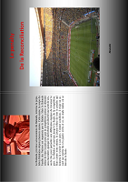
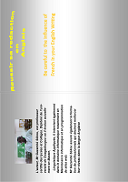
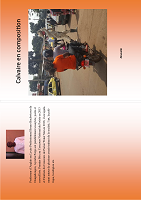

Le penalty de la reconcialiation
Le Balanda, province sécessionniste du Balaka, terrorise la population Balakaise depuis plusieurs années. Cette année, la coupe du Farafin des Nations est organisée par le Balaka. Mais le Balanda refuse de faire la paix pour que la compétition puisse se dérouler sans encombre, quoique le chef rebelle ait décrété une sorte de cessez-le feu pour permettre aux différentes équipes de traverser le pays. Le Balaka est parvenu jusqu’à la finale de la compétition. Mais contre toute attente, le joueur refuse de tirer le penalty qui donnera la victoire à son pays. Comme condition, il exige un accord qui mettra fin à la guerre civile et ce, au stade même où se déroule la finale. obtenez le ici

Reussir sa redaction d'Anglais au second cycle
Au Burkina Faso l'apprentissage de l'Anglais commence le plus souvent à partir de la 6eme. Cependant même après plusieurs années d'apprentissage,le niveau de nos élèves reste très bas même pour des élèves en classe de la Tle. En effet, il n'est pas rare de voir ces derniers former des phrases telles que « The Europe want we exploit » - « the countries Africans must United for develop »… Des phrases à couper le souffle ! ce livre se voit être la solution à ces problèmes. Il reprend les fautes graves commises par les élèves dues a l’interference du français et propose des corrections adaptées. obtenez le ici
